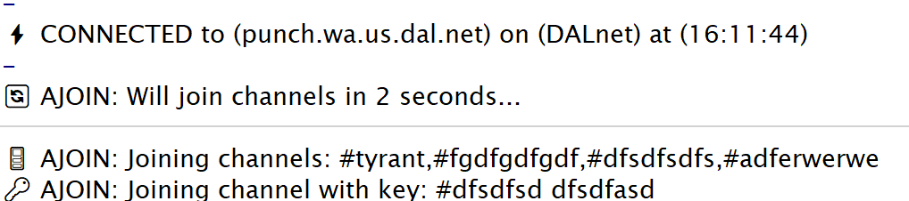

Overview
Welcome to the CritiCAL IRC Auto-join Module documentation! This script provides automatic channel joining functionality for mIRC with a user-friendly graphical interface.
Version: 2.0.0
Author: sorzkode
License: MIT
Repository: https://github.com/sorzkode/circ
Installation
- Download the
ajoin.mrcfile from the GitHub repository - Place it in your mIRC scripts directory (usually
C:\Users\[YourName]\AppData\Roaming\mIRC\scripts\) - In mIRC, type: /load -rs scripts/ajoin.mrc
- The script will automatically initialize and display a confirmation message
Features NEW!
- Automatic channel joining on connect
- Support for password-protected channels
- Configurable join delay to prevent flooding
- Graphical user interface for easy management
- Import/Export channel lists
- Usage statistics tracking NEW!
- Cross-network support
- Double-click removal of channels
- Real-time input validation
Usage Guide
Opening the Dialog
To open the Auto-join configuration dialog, use one of these methods:
- Type
/ajoinin any mIRC window - Right-click and navigate to: CritiCAL IRC → Auto-join → Open
- Use the keyboard shortcut (if configured)
Adding Channels
| Step | Action | Notes |
|---|---|---|
| 1 | Enter channel name | With or without # prefix |
| 2 | Enter key (optional) | For password-protected channels |
| 3 | Click | Channel appears in list |
Managing Channels
- Remove Single: Select a channel and click
- Remove by Double-Click: Double-click any channel in the list
- Clear All: Click to remove all channels
Commands Reference
/ajoin_help - Display help information
/ajoin_stats - View script statistics
/ajoin_reset_stats - Reset statistics
/ajoin_view_vars - View script variables
/ajoin_export - Export channels list
/ajoin_import - Import channels list
/ajoin_disable - Disable the Auto-join Module
/ajoin_enable - Enable the Auto-join Module
/ajoin_unload - Unload the script completely
Demo Video
Video demonstration of CritiCAL IRC Auto-join Module
Screenshot after video...
Menu Options
File Menu
- Import List: Load channel list from a text file
- Export List: Save current channel list to a text file
- Exit: Close the dialog window
Tools Menu
- Reset Stats: Clear all usage statistics
View Menu
- Stats: Display usage statistics in @cIRC window
- Variables: Show all script variables and values
Help Menu
- About: Display script information
- Help: Show help information
- Website: Visit the GitHub repository
Frequently Asked Questions
Q: Can I use different channel lists for different networks?
A: Currently, the auto-join list is global and will be used across all networks. Network-specific lists may be added in a future version.
Q: What happens if I set the join delay to 0?
A: Channels will be joined immediately upon connection. Be careful as this might trigger flood protection on some networks.
Q: How do I backup my channel list?
A: Use File → Export List to save your channels to a text file. You can import this file later using File → Import List.
Q: Can I edit the channel list manually?
A: Yes! Export the list, edit it in a text editor (one channel per line, format: #channel key), then import it back.
/ajoin_view_vars
command or through View → Variables in the dialog menu!
Troubleshooting
| Problem | Solution |
|---|---|
| Script won't load | Check file path and use full path: /load -rs C:\path\to\ajoin.mrc |
| Channels not joining | Ensure module is enabled (/ajoin_enable) and check join delay setting |
| Dialog won't open | Module might be disabled. Use /ajoin_enable first |
| Import fails | Check file format: one channel per line, optional key separated by space |
Version History
- v2.0 - Added modern interace, error handling, statistics tracking, variable viewer, and import / export functionality
- v1.0 - Initial release (~2005) with basic auto-join functionality: